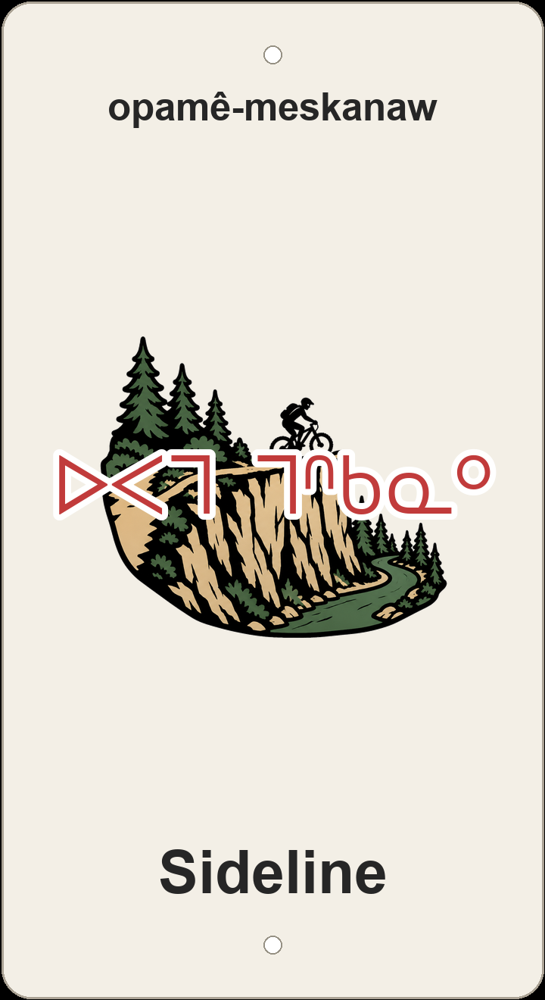

"trail off to the side — opamê 'to the side, alongside' + meskanaw 'trail, road.'"

Draft 3D-printed sign preview — a singletrack peeling off to skirt a clifftop ledge above the river, the syllabics ᐅᐸᒣ ᒣᐢᑲᓇᐤ, transliteration, and the English name.
Sideline does exactly what it says: a narrow singletrack that branches off the main line and traces the top edge of a steep river-bank cliff, the river curving along its base below. The Cree opamê-meskanaw stacks opamê- 'off to the side, alongside' onto meskanaw 'trail' — a path that runs beside rather than through.
The English name carries a wink the Cree quietly keeps: a 'sideline' is also the secondary, kept-on-the-side affair, the thing you do off the main road. opimê- 'on the side' lands in the same place — the alternate line, the one off to the edge.
Sideline runs through the Gold Bar / Capilano river-valley park on ᓀᐦᐃᔭᐤ ᐊᐢᑭᕀ Nêhiyaw-Askiy — Plains Cree territory, Treaty 6, and a homeland of the Métis Nation.
A side-trail in the Gold Bar / Capilano Park network — about 518 m skirting a clifftop ledge above the river (~26 m down, ~14 m up). Tap through to Trailforks for maps, conditions, and rider reports.
Explore the trail on Trailforks, with a local preview from the uploaded GPX.
sîpâ 'along, beside' + pimohtêwin 'a walking route.' Keeps the romantic 'kept on the side' nuance.
An edge-of-things sense for a sidelined route — the benched, secondary line.
| English | SRO | Syllabics |
|---|---|---|
| trail off to the side (the plaque) | opamê-meskanaw | ᐅᐸᒣ ᒣᐢᑲᓇᐤ |
| the alongside walk / route | sîpâ-pimohtêwin | ᓰᐹ ᐱᒧᐦᑌᐎᐣ |
| bypass / edge trail | ayisâw meskanaw | ᐊᔭᔮᐤ ᒣᐢᑲᓇᐤ |
| trail, road, path (base) | meskanaw | ᒣᐢᑲᓇᐤ |
SRO uses ê î ô â. Syllabics match the SRO shown.
Dialectal preferences may affect minor spelling choices; check local norms for signage.
References: itwêwina, Online Cree Dictionary, Plains Cree Dictionary
Each sign is 3D printed in Edmonton. Want one for your own trail, cabin or wall? Email hello@nehiyomtb.ca.